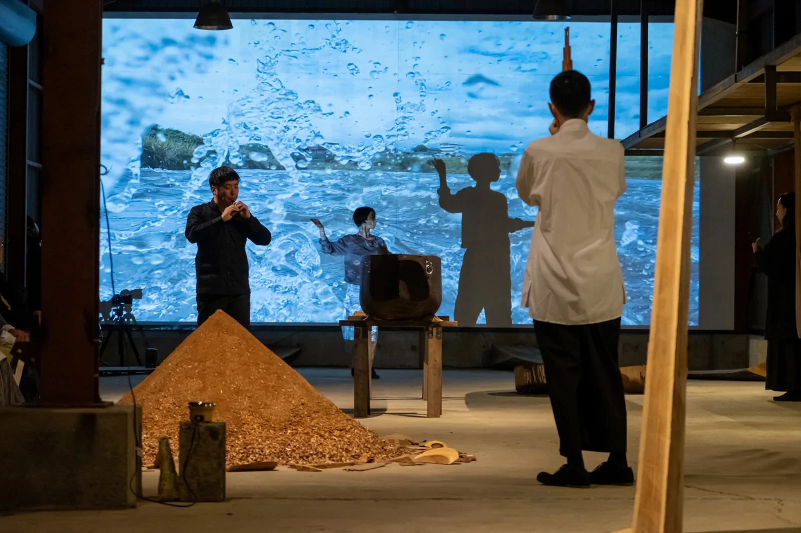

Water Saniwa
Watch on YouTube ↗October 13, 2023 / Kisobo Suijin Shrine
Kaho Kogure, Jumpei Ohtsuka, Kanako Nakamura, Motonori Miura

Ubusuna Hydrology connected a 2022 research program with a 2023 exhibition across five sites in Kisobo and Himenoyu. Thirteen artists investigated local geology, topography, water environments, and water-related beliefs while taking part in seven online lectures. The project brought hydrology—the science of water’s occurrence, movement, and distribution—into relation with local belief centered on Kisobo Suijin Shrine and Mizuhanome.
Miki Okubo made an installation from experiences of miscarriage and premature birth and interviews about fertility treatment. Natsuki Urushihara and Motonaka Senga made Mizuhanome folding screens and local-cherry pedestals. Yusuke Araki, Masahiko Ito, and BACCO (Rieko Matsushita + Tatsuya Matsushita) built the fictional Yatsuoka Gongen-do Research Institute from surveys of local beliefs and water boundaries. Akiko Nagaya worked with water phenomena in video and photography; Sohei Nishino made a dugout canoe from an Izu cedar and documented its journey down the Kano River to Suruga Bay.
On the eve of the exhibition, Kaho Kogure and gagaku musicians Jumpei Ohtsuka, Kanako Nakamura, and Motonori Miura performed dance and gagaku at Kisobo Suijin Shrine and Inoue Warehouse. During the exhibition, Yuko Asano and Yusuke Suzuki held a conversation on the local water environment, Akihiro Hatanaka gave a lecture on water belief, and Keiji Matsumoto led a guided tour of Kisobo. Through research, artworks, bodily expression, and specialist knowledge, the exhibition brought together multiple ways of understanding water through science, belief, the body, and everyday life.
《うぶすなの水文学》は、2022年のリサーチプログラムと2023年の5会場での展覧会をつないだ2年間のプロジェクトである。13名のアーティストが貴僧坊・姫之湯周辺の地質、地形、水環境、水の信仰を現地調査し、7回のオンラインレクチャーと中間報告を重ねた。「水文学」と貴僧坊水神社のミヅハノメを中心とする土地の信仰を重ねた。
大久保美貴は流産・早産と不妊治療経験者への取材から作品を制作。漆原夏樹＋千賀基央はミヅハノメの屏風と地元の桜材の台座を制作した。荒木佑介＋伊藤允彦＋BACCO（松下理恵子＋松下達矢）は地域信仰と水の境界を調査し「八岳権現道研究所」を構成。永冶晃子は水の現象を映像・写真へ、西野壮平は伊豆の杉から丸木舟を作り狩野川から駿河湾へ下る作品へ展開した。
展覧会開幕前夜には小暮香帆と大塚惇平・中村香奈子・三浦元則が水神社と井上倉庫でダンスと雅楽を上演。会期中には浅野友子・鈴木雄介の水環境の対談、畑中章宏の水の信仰の講演、松本圭司による貴僧坊のガイドツアーを開催した。調査、作品、身体表現、専門知を通じて、水を科学・信仰・身体・生活の複数の経路から重ねて捉える展覧会として結実した。
In 2022, thirteen artists carried out field research while taking part in seven online lectures across hydrology, geology, folklore, regional culture, environmental issues, and art. Research reports and interim presentations were shared publicly before the 2023 exhibition.
Research archive ↗October 13, 2023 / Kisobo Suijin Shrine
Kaho Kogure, Jumpei Ohtsuka, Kanako Nakamura, Motonori Miura
October 13, 2023 / Inoue Warehouse
Kaho Kogure, Jumpei Ohtsuka, Kanako Nakamura, Motonori Miura
2023年10月13日 / 貴僧坊水神社
小暮香帆、大塚惇平、中村香奈子、三浦元則
2023年10月13日 / 井上倉庫
小暮香帆、大塚惇平、中村香奈子、三浦元則
The talks and performances were also part of the exhibition, offering different ways to think about water, belief, and everyday life in the area.
September 15 & October 13, 2023 / Kisobo Community Center
Instructor: Kaho Kogure
October 21, 2023 / Kisobo Suijin Shrine
Yuko Asano × Yusuke Suzuki / Moderator: Kohei Sumi
October 21, 2023 / Kisobo Community Center
Akihiro Hatanaka / Moderator: Kohei Sumi
トークやパフォーマンスも展覧会の一部として、水や信仰、土地の暮らしを、さまざまな角度から考える場になった。
2023年9月15日・10月13日 / 貴僧坊公民館
講師：小暮香帆
2023年10月21日 / 貴僧坊水神社
浅野友子 × 鈴木雄介 / モデレーター：住康平
2023年10月21日 / 貴僧坊公民館
講師：畑中章宏 / モデレーター：住康平